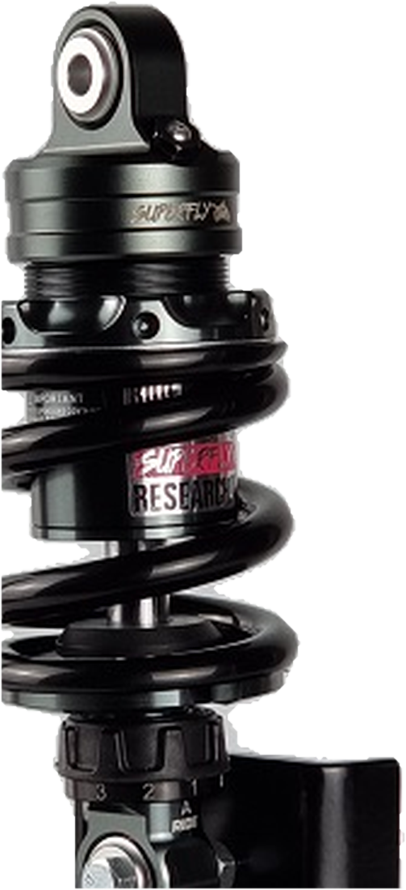
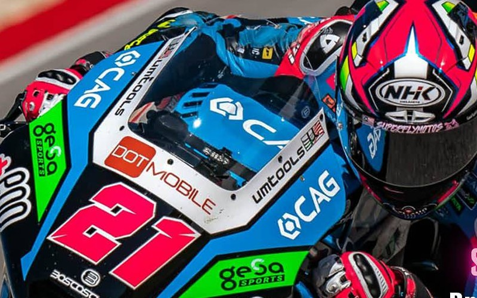
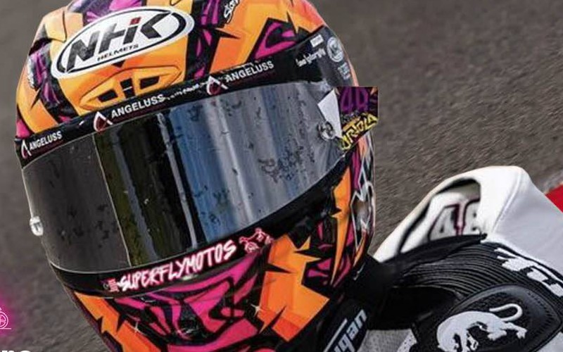

Turn 1 — the stop
Hardest braking point on the lap. This is where a master pump either holds a firm lever or goes long. Project RP is tuned here.
Designed at Sepang International Circuit
Technical parts for scooters and underbones — developed on track, validated by Grand Prix riders, manufactured in Malaysia.

Teardown · 01
Six clicks of rebound. A full floating piston. A CNC-machined aluminium chassis that was signed off on track, not in a catalogue. Drag to orbit — tap a marker to go deeper.
Balanced — the setting most riders start from.
Three factory finishes. Spring and stage light retint live.
Stage renders a photographic stand-in of the Project RA while a scanned model is prepared — camera, lighting, platform and every marker anchor are real 3D.
Proving ground
Every Superfly part is signed off at Sepang International Circuit. Fifteen corners, each one asking a different question of the hardware.
Hardest braking point on the lap. This is where a master pump either holds a firm lever or goes long. Project RP is tuned here.
A long, loaded right-hander. Sustained lateral force finds any flex in a rim and any fade in rebound damping.
Final hairpin onto the main straight. Traction on exit is a suspension problem before it is an engine one.
Race proven
Superfly's Ride. Race. Research. team takes Grand Prix race data straight back into the next generation of parts.

Moto2 World Championship
Joined the Ride. Race. Research. team for the 2023 season. What he reports after a session is what gets changed on the next prototype.

Moto3 World Championship
Superfly-backed, carrying the mark on the chin bar. Race feedback feeds straight into production hardware.
As a top Moto2 rider, I demand the best racing products for myself.
Alonso Lopez